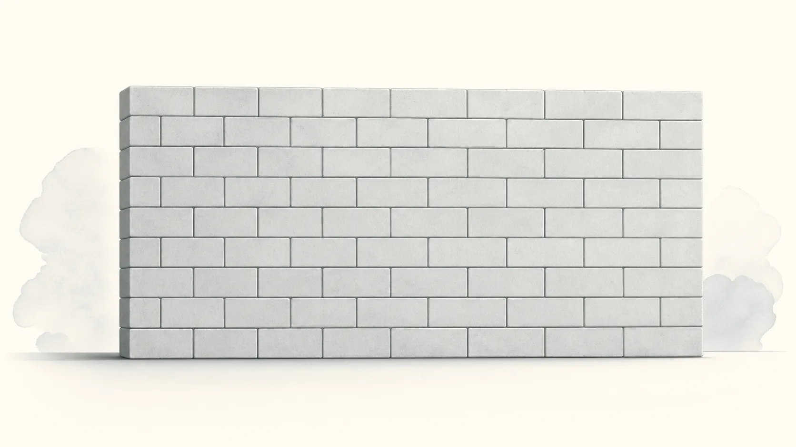
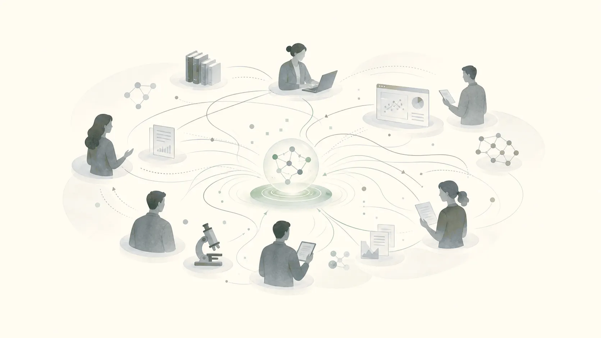
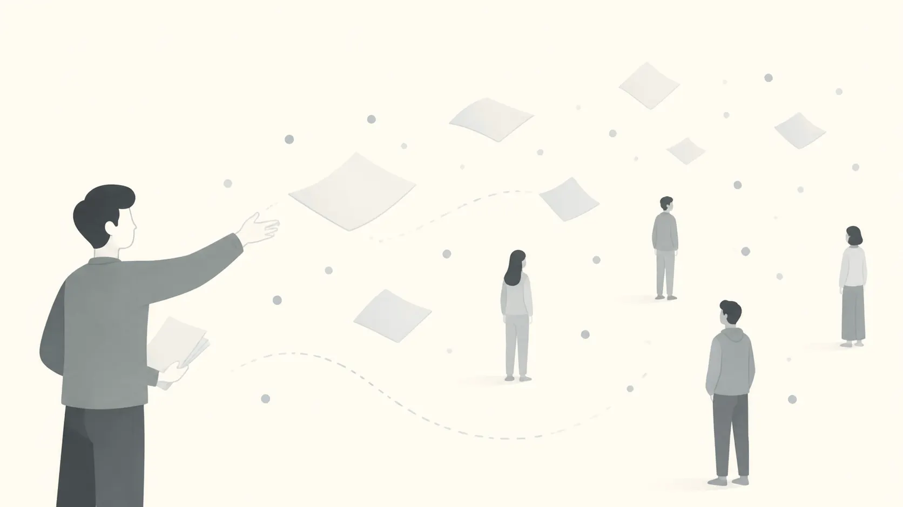
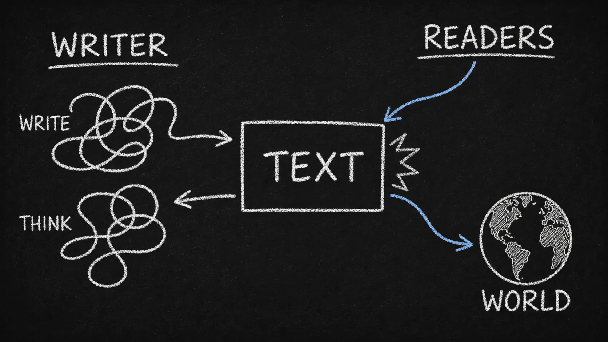

Professional English is not perfect English.
Make readers care, trust, and act.
Knowledge and value
Who decides what counts as knowledge?
Knowledge as a wall

Stable facts accumulate, one brick at a time. Your job is to add one more.
Knowledge as a community judgment

A result becomes knowledge when a community sees how it changes what they can understand, predict, build, or decide.
Audience and attention
Communication is not passing out flyers.
Just distributing information

Same message, random audience, hope someone cares.
Designing for attention
Reader, channel, timing, and format are part of the message.
Reader attention
Teachers are paid to read. Professional readers are not.
Teacher
- Knows the assignment has value
- Reads to evaluate your understanding
- May continue even when bored
Experts
- Has limited attention
- Reads only if the text helps
- Can stop after three sentences
The outdated reflex
Old forms create stability. Real readers search for instability signals.
Old reflex
Background → Definition → Explanation → Thesis
Useful sometimes. But it can delay the reason to care.
Professional pressure
What is unstable? Why does it matter? What changes?
The reader needs value before detail.
Why readers get lost
The text sits between two ways of seeing the world.

The practical tool
Turn information into value with four moves.
Belief
What do readers currently think, assume, use, or optimize?
Instability
What no longer fits, explains, works, or remains known?
Stakes
Why does this problem cost readers attention, time, accuracy, or opportunity?
Claim
What does your work now help readers understand, decide, or do?
Real example
Same topic. Stronger reader value.
Before: explains the area
Deep research agents solve complex information-seeking tasks through iterative retrieval, document inspection, and multi-step evidence synthesis.
Because retrieval is central, many systems rely on dense or neural retrievers, while BM25 is often treated as a weak baseline.
Do strong deep-research agents still require neural retrievers?
After: challenges an assumption
Retriever effectiveness is widely treated as the hard ceiling of information-seeking systems.
However, as LLMs become better at reasoning and tool use, systems operate through an agentic loop.
We risk overemphasizing retriever improvement while overlooking other opportunities.
Closing checklist
Before you send professional English, ask four questions.
Reader
Who decides whether this is useful?
Belief
What do they already think or expect?
Problem
What is missing, unstable, risky, or changing?
Change
What should they understand or do next?
References
References and further reading
Primary sources
VideoMcEnerney, L. (2014). Leadership Lab: The Craft of Writing Effectively. UChicago Social Sciences.youtu.be/vtIzMaLkCaM
HandoutMcEnerney, L. (2013). The Problem of the Problem. University of Chicago Writing Program, for The Ohio State University.u.osu.edu/.../UnivChic_WritingProg-1grt232.pdf
Further reading
CourseLin, J. (2023). The Art and Science of Empirical Computer Science. Course materials, Fall 2023.github.com/lintool/art-science-empirical-cs-2023f
BookWang, D., & Barabási, A.-L. (2021). The Science of Science. Cambridge University Press.dashunwang.com/book/the-science-of-science
BookWilliams, J. M. (2006). Style: Ten Lessons in Clarity and Grace (8th ed.). Pearson Longman.WorldCat record
Book呂育道（2014）。《Paper・論文・報告如何寫作》。新陸書局。Google Books record